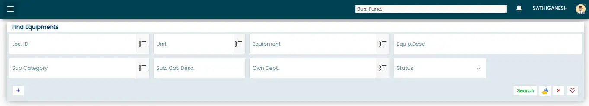
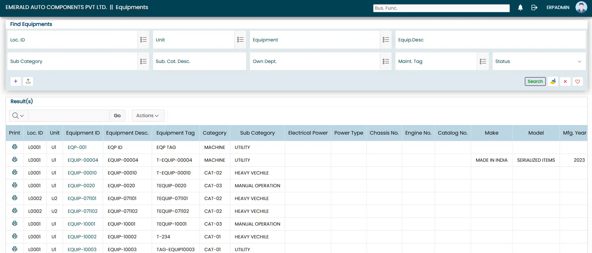
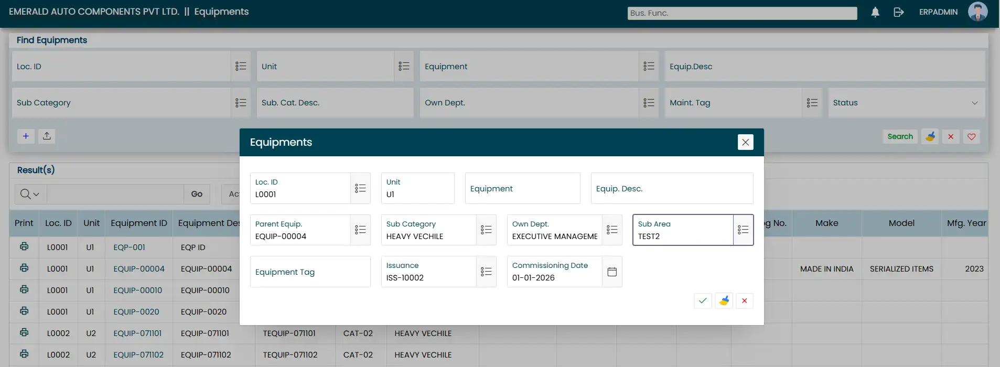
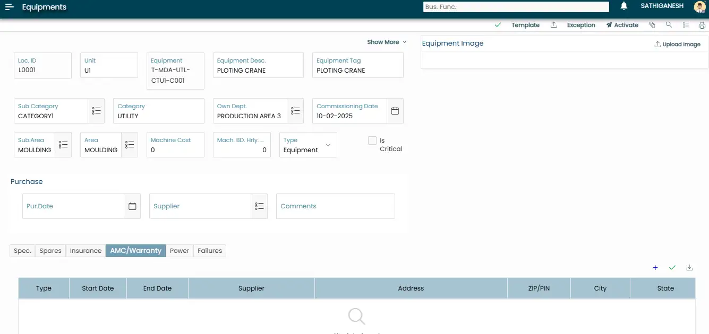
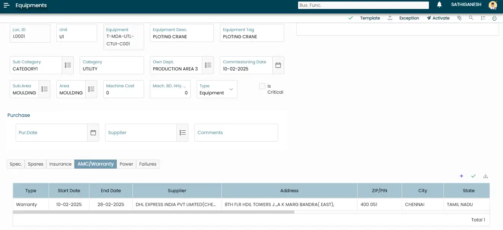

<div data-category="Plant Maintenance" data-title="Equipments" data-updated="January 27, 2026" data-contributors="RoadmapIT" data-breadcrumb="Home,Plant Maintenance,Equipments">
  <div class="page-content">
    <p>Equipment is a term that refers to any physical asset or machinery that is used in the production or operation of a plant. Equipment can include various types of machines, devices, components, or systems that perform different functions or tasks. Equipment can have different characteristics, such as size, shape, capacity, power, speed, efficiency, accuracy, etc.</p>
    <p>The Equipment & Description are defined in this screen. The Equipment cannot be modified or deleted when the schedule was created.</p>
    <h5>Navigation path:</h5>
    <p class="fs-6">Option 1: Type the business function ID in search box and click on the OK button.</p>
    <p class="fs-6">Option 2: Plant Maintenance \ Transactions \ Equipments</p>
    <h2>Equipments – Search</h2>
    
    <ul style="list-style-type: none; align-content: center">
      <li class="mouse-icon">Search screen displays the list of equipments with the relevant details and its status</li>
      <li class="mouse-icon">Click on Search to filter all the records.</li>
    </ul>
    
    <ul style="list-style-type: none; align-content: center">
      <li class="mouse-icon">Search screen displays the list of Equipments with the relevant details and its status</li>
      <li class="mouse-icon">User can filter the respective documents by entering the search parameters at the header.</li>
      <li class="mouse-icon">On clicking search button, system displays the results relevant to the search parameters entered.</li>
      <li class="mouse-icon">
        Using
        
        icon, entered search parameters can be cleared.
      </li>
      <li class="mouse-icon">
        To close the screen, use
        <i class="bi bi-x fs-4 mx-2 text-danger"></i>
        icon.
      </li>
      <li class="mouse-icon">
        By Clicking the
        <i class="bi bi-plus fs-4 mx-2 text-primary"></i>
        Add button we can create new equipment. The equipment details given are populated to the transaction screen once executed.
      </li>
    </ul>
    
    <ul style="list-style-type: none; align-content: center">
      <li class="mouse-icon">Enter/Select the Location ID, Unit is Auto Populated.</li>
      <li class="mouse-icon">Enter The Equipment.</li>
      <li class="mouse-icon">Enter the Equipment Description.</li>
      <li class="mouse-icon">Enter/Select the Parent Equipment if the New Equipment is child of it.</li>
      <li class="mouse-icon">Enter/Select the Sub category</li>
      <li class="mouse-icon">Enter/Select the Own Dept.</li>
      <li class="mouse-icon">Enter/Select the Sub Area.</li>
      <li class="mouse-icon">Enter the Equipment Tag.</li>
      <li class="mouse-icon">Enter/Select the Issuance Code Description.</li>
      <li class="mouse-icon">Enter/Select the Commissioning Date.</li>
      <li class="mouse-icon">
        Click
        <i class="bi bi-check-lg fs-4 mx-1 text-success"></i>
        to save
      </li>
    </ul>
    <p>The Equipment cannot be modified or deleted when the schedule was created.</p>
    
    <p>Purchase details like, date of purchase, supplier and equipment details can be given in this screen. Specification and Spare of the equipment can also be given here.</p>
    <p>AMC/Warranty can also be given for the equipment if required.</p>
    
    <ul style="list-style-type: none; align-content: center">
      <li class="mouse-icon">
        Click
        <i class="bi bi-plus fs-4 mx-2 text-primary"></i>
        to add
      </li>
      <li class="mouse-icon">Select the Type.</li>
      <li class="mouse-icon">Enter the Start and End date.</li>
      <li class="mouse-icon">Enter/select the Supplier.</li>
      <li class="mouse-icon">Supplier address automatically fetched.</li>
      <li class="mouse-icon">
        Click
        <i class="bi bi-check-lg fs-4 mx-1 text-success"></i>
        to save
      </li>
      <li class="mouse-icon">After giving all the required details equipment can be activated by clicking Activate button.</li>
    </ul>
  </div>
</div>
